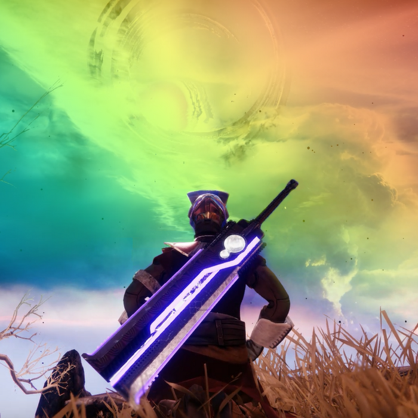

Syntholion is a Senate Parliamentarian. He has served as the Speaker of the Senate once, the senator of Voopmont thrice, and the Governor of Voopmont once. He is also the founder of the Sunglasses Party and Voopmont University.
| Syntholion | |
|  | |
| Current Position: | Senate Parliamentarian |
| Former Positions: | Speaker of the Senate Senator of Voopmont Governor of Voopmont Voopmont University Director |
| Species: | Human |
| District: | Voopmont |
| Former Political Parties: | Sunglasses Party New Vooperian Party |
Contents
Syntholion, formerly SynthioX, Apollo, and CoolioX, but commonly referred to as Coolio, landed in Vooperia on September 9th, 2018, and went to settle in Voopmont. He was widely popular among other citizens and fellow Voopmontians.
There, he quickly rose through the ranks and became a very prominent part of the community. He was then elected the second senator of Voopmont after a near tie with Asdia0.
Syntholion was elected on July 24th, 2020 as Senator of Voopmont. During his first term as senator, Syntholion was known for being a member of the New Vooperian Party.
He also ran for the First Prime Minister Elections, but received no votes. Near the end of his first term, he left the New Vooperian Party and began advocating for independent senators without bias. The reasoning he gave was due to the toxicity that the party had, and the fact that the party leader, PopeFrancis, was continually in drama, causing controversy for the party.
He resigned from his role as senator due to a court case on September 1st, 2020.
After his first term as senator, Syntholion began working on Voopmont University, a university which helped the previously poorly educated Voopmontians have the ability to take white-collared jobs.
The university lasted a week, but was a financial success for him, making ¢140,000 after the University's downfall.
Syntholion was elected again on October 6th, 2020 as Senator of Voopmont. During his second term as senator, Syntholion was known for advocating Icelesian autonomy and advocating for independent senators without bias even more than his first term.
He ran again for the second Prime Minister elections, and received 2 votes. Near the end of his second term as senator, he advocated against Icelesia districthood. He lost against a landslide election to Asdia0 on November 25th, 2020.
Syntholion was elected on November 30th, 2020 as Governor of Voopmont. During this time, he mostly focused on passing district bills and preventing Icelesia from becoming independent.
Near the end of his term as governor, a revolution in Medievala caused the nation to reform into the Second Lanatian Empire. The Second Lanatian Empire declared war on Voopmont and San Vooperisco, but lost due to the immense amount of soldiers, warships, and planes that Vooperia had compared to the Second Lanatian Empire. Senator Asdia0 and Governor Syntholion defended Voopmont during this time.
He resigned as governor on December 20th, 2020.
Syntholion was elected again on May 9th, 2021 as senator of Voopmont. During his third term as senator, Syntholion worked on giving districts more autonomy from the federal government and again advocated for independent senators that were not affiliated with any party.
During his third term as senator, he ran for the third Prime Minister elections and got a total of 3 votes.
He lost against an election to Droplt on June 9th, 2021.
Syntholion became a Senate Parliamentarian on June 10th, 2021. During this time, he was known for keeping order in the Senate Journal and keeping bill history down. He also held many votes during this time and kept order in the senate overall.
Thanks to this, Syntholion ran for Speaker of the Senate, and ran against Senator Luka and Honk. He won with 12 votes.
Syntholion became Speaker of the Senate on June 21st after winning the election with a landslide against Senator Luka and Honk.
He was later impeached on July 8th for abuse of power, but due to the fact that he was still Parliamentarian, continued to handle votes.
He later resumed handling Senate Voting, the Senate Journal, and Senate Elections.
He later lost the position to Senator Luka on 22 July 2021.